Adresse
228 Cours de la Libération et du Général de Gaulle
38100 Grenoble
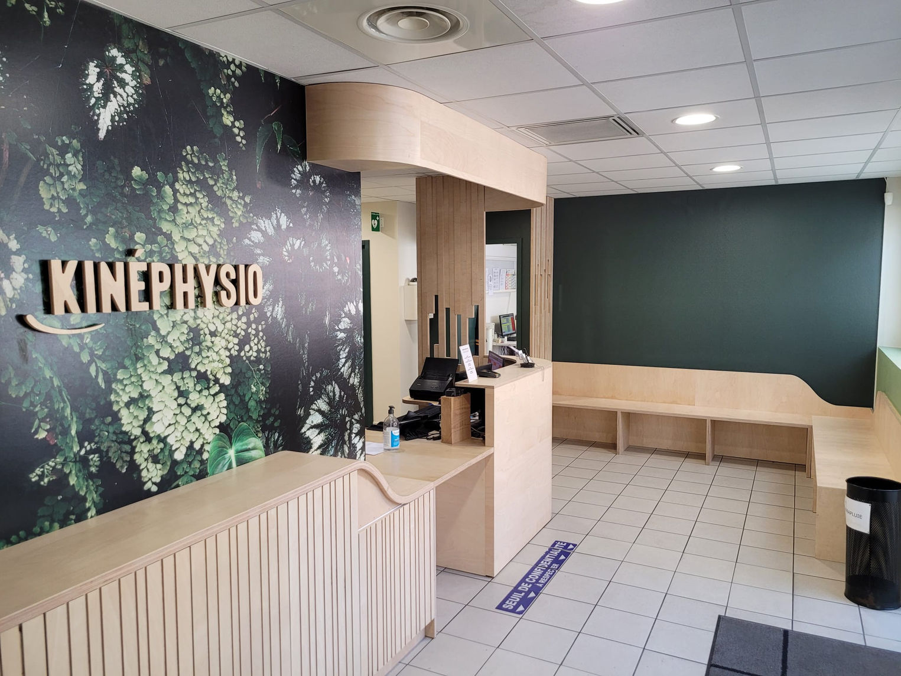
Grenoble
Cabinet de kinésithérapie, ostéopathie, balnéothérapie, rééducation à l’effort et accompagnement personnalisé à Grenoble.
228 Cours de la Libération et du Général de Gaulle
38100 Grenoble
04 76 49 47 06
Merci d’appeler pendant les horaires d’ouverture du secrétariat.
Lundi : 9h à 13h — 13h30 à 19h
Mardi : 9h à 13h — 13h30 à 17h30
Mercredi : 9h à 12h
Jeudi : 9h à 13h — 13h30 à 17h30
Vendredi : 9h à 13h
Le Centre Kinéphysio est ouvert du lundi au vendredi de 8h à 19h.
Remboursement par l’Assurance Maladie (60%) et les mutuelles (40%). Remboursement à 100% par l’Assurance Maladie si ALD, CMU, accident du travail ou exonération.
Si le cabinet ne répond pas, c’est que le secrétariat est déjà au téléphone avec un patient ou que les thérapeutes sont en soins. Vous pouvez envoyer un message via le formulaire e-mail.
Le cabinet
Le Centre Kinéphysio accompagne les patients dans leur rééducation, la prise en charge de leurs douleurs, le retour au mouvement et l’amélioration de leur qualité de vie. Son objectif : restaurer la fonction et améliorer la qualité de vie, en prenant le temps de comprendre les causes du mal-être.
L’équipe de kinésithérapeutes et d’ostéopathes construit un plan de traitement global et personnalisé pour les douleurs, blessures, suites opératoires, besoins de reprise sportive ou rééducation en piscine.
Soins
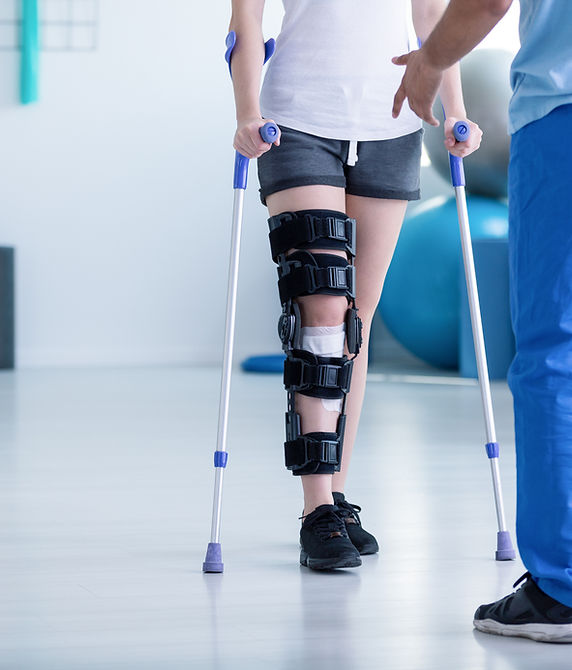
Kinésithérapie générale, kinésithérapie du sport, rééducation à domicile, rééducation pré et postopératoire, douleurs et troubles musculo-squelettiques.
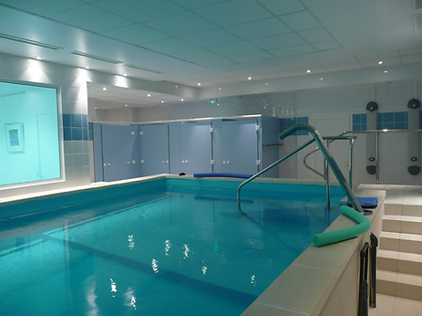
Rééducation en piscine chauffée entre 31 et 32 °C, profondeur 1m20/1m40, avec séance de 45 minutes et kinésithérapeute spécialisé à vos côtés.
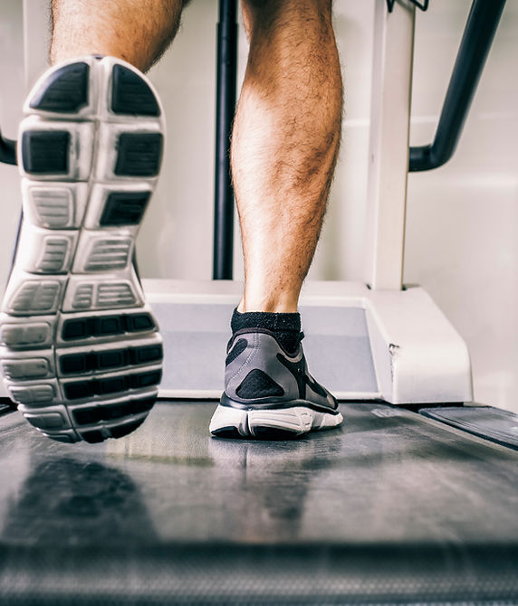
Accompagnement progressif pour retrouver de l’endurance, reprendre une activité physique et améliorer les capacités fonctionnelles.
Prise en charge adaptée aux musiciens : posture, gestes répétitifs, douleurs liées à la pratique et prévention des troubles.
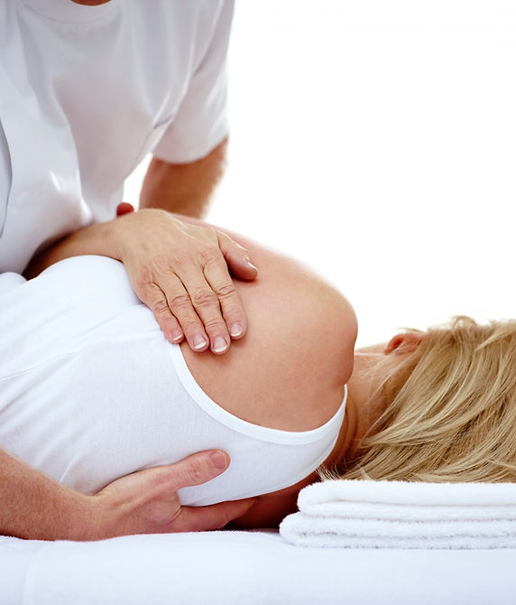
Médecine manuelle visant à repérer les restrictions de mobilité et à rétablir l’équilibre du corps dans une approche globale.
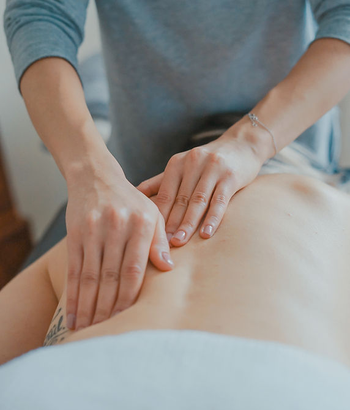
Massage bien-être, massage sportif récupération et prestations de détente pour relâcher les tensions et favoriser la récupération.
Pratique douce et bienveillante, adaptée à tous les niveaux, autour de la respiration, de la mobilité et de postures apaisées.
Remboursement possible par certaines mutuelles uniquement, sans remboursement par l’Assurance Maladie.
Équipe
L’équipe du Centre Kinéphysio accompagne les patients avec sérieux, écoute et professionnalisme. Chaque prise en charge commence par une compréhension de la situation du patient afin de proposer un suivi adapté.
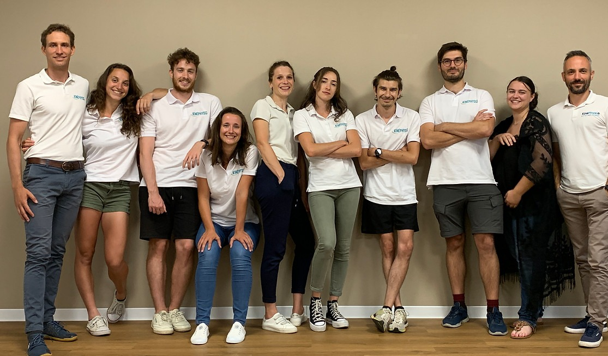
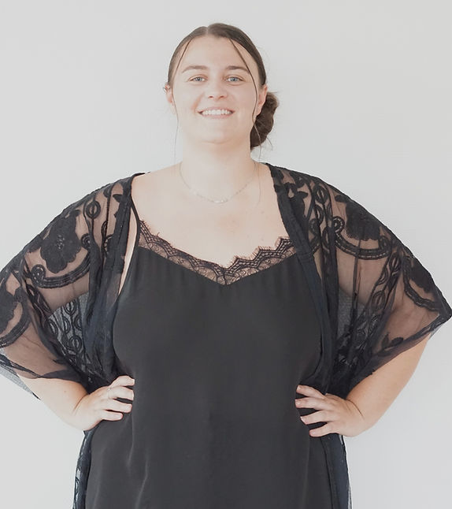
Secrétaire
Accueil, orientation et informations pratiques.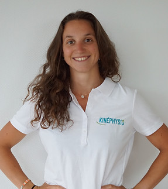
Kinésithérapeute
Rééducation, mouvement et accompagnement patient.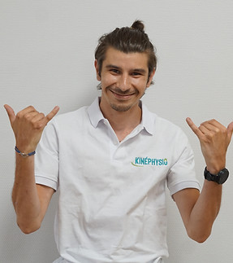
Kinésithérapeute
Kinésithérapie générale et suivi fonctionnel.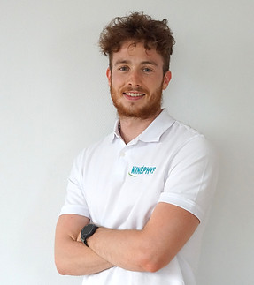
Kinésithérapeute
Rééducation, douleurs et reprise d’activité.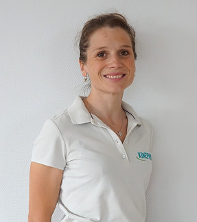
Kinésithérapeute
Prise en charge personnalisée et rééducation.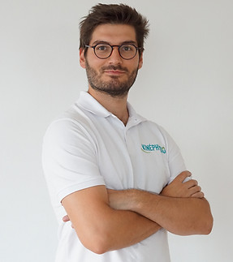
Kinésithérapeute
Kinésithérapie, mobilité et retour au mouvement.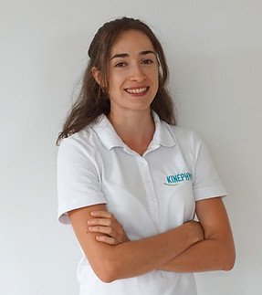
Kinésithérapeute et professeur de yoga
Rééducation, mobilité douce et yoga.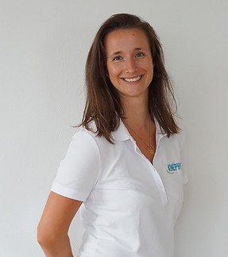
Kinésithérapeute et professeur de yoga
Kinésithérapie, respiration et mouvement doux.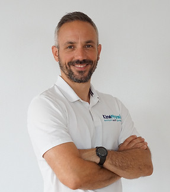
Kinésithérapeute-ostéopathe
Approche manuelle, rééducation et ostéopathie.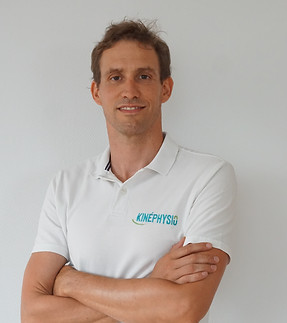
Kinésithérapeute-ostéopathe
Suivi manuel, traitement global et rééducation.Infos pratiques
Contact
Pour toute question ou demande d’information, vous pouvez contacter le Centre Kinéphysio par téléphone ou via le formulaire.
Si la ligne est occupée, merci de privilégier le formulaire : le secrétariat peut être déjà en échange avec un patient et les thérapeutes peuvent être en soins.
04 76 49 47 06FAQ
Vous pouvez contacter le cabinet par téléphone au 04 76 49 47 06 pendant les horaires d’ouverture du secrétariat, ou envoyer un message via le formulaire de contact.
Le Centre Kinéphysio propose notamment de la kinésithérapie, de la balnéothérapie, de l’ostéopathie, de la kinésithérapie du musicien, des massages bien-être, du yoga tout en douceur et de la rééducation à l’effort.
Le centre se situe au 228 Cours de la Libération et du Général de Gaulle, 38100 Grenoble.
Il est conseillé d’appeler pendant les horaires d’ouverture du secrétariat indiqués sur le site.